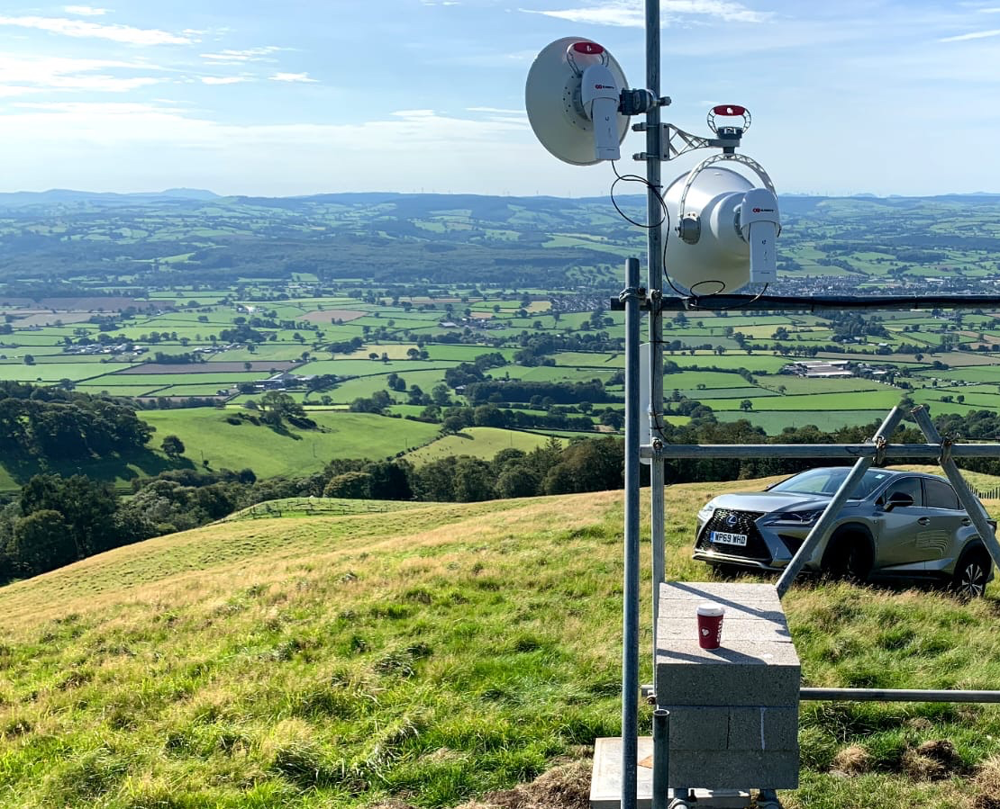
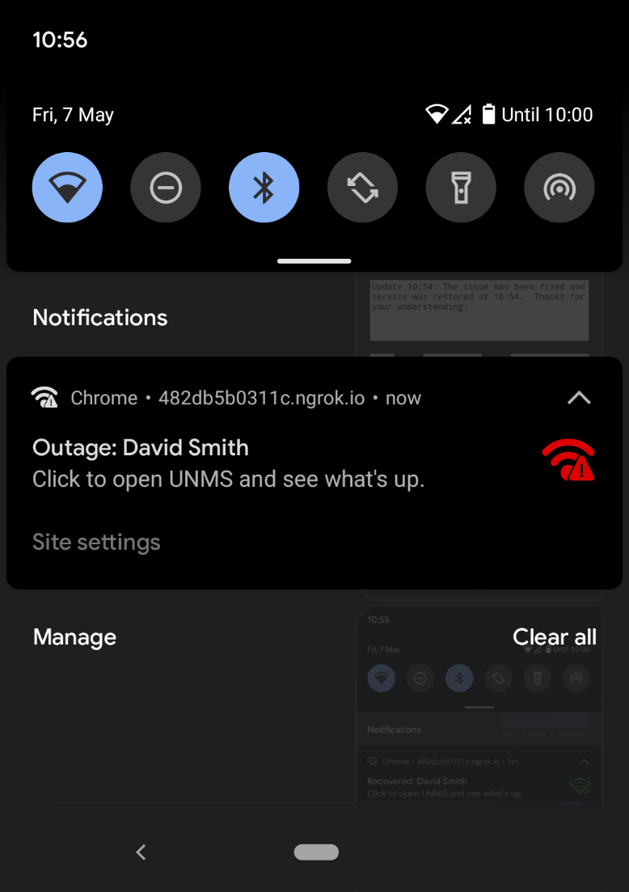
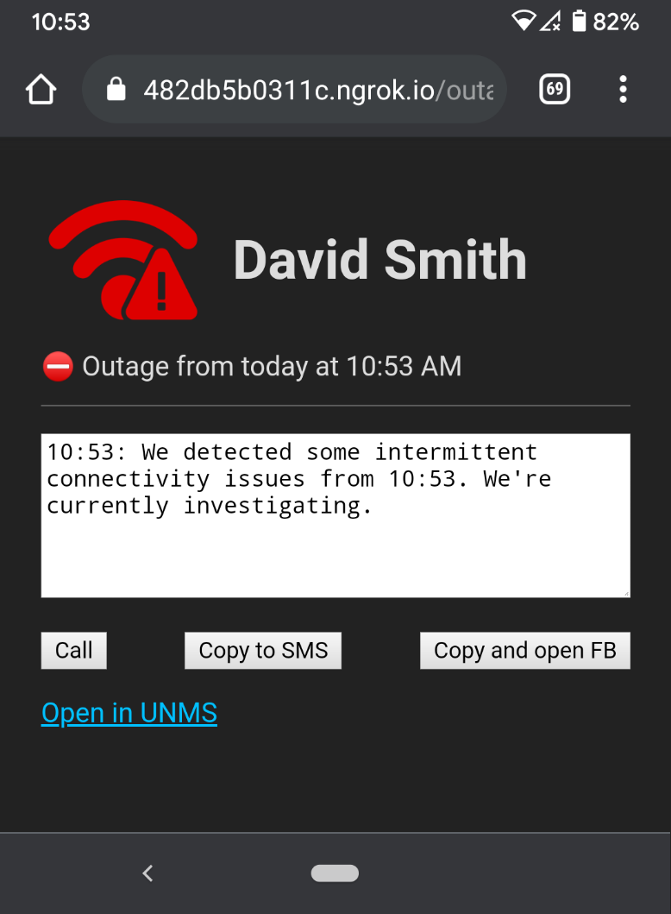
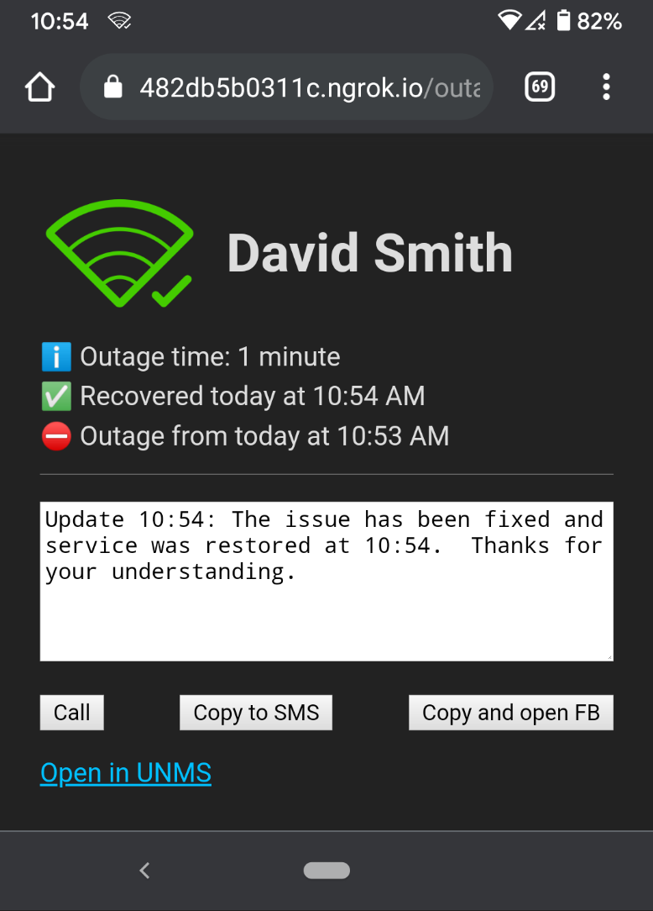
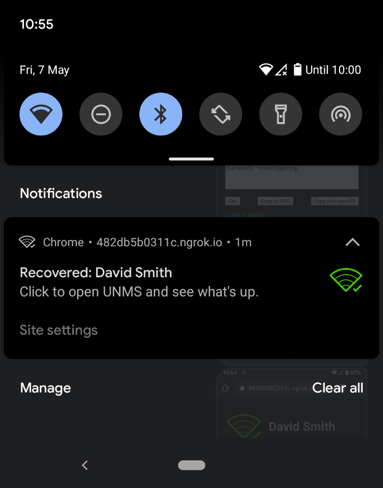
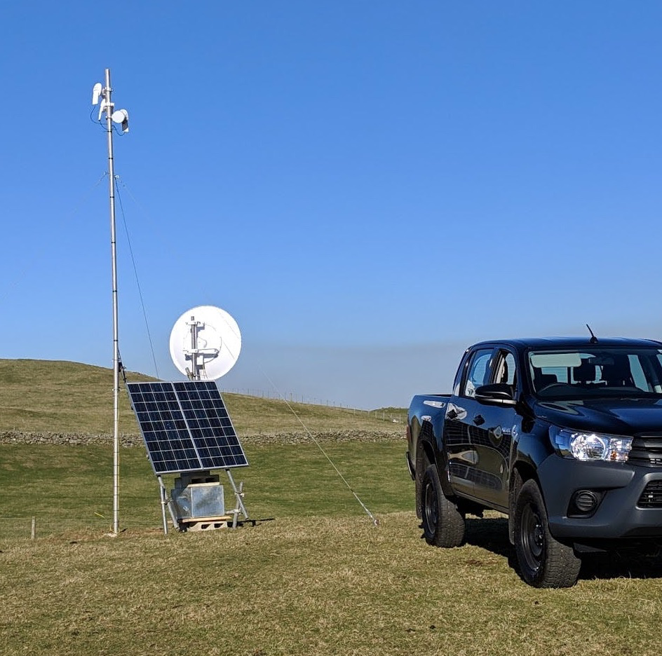

TL; DR: A proof-of-concept webapp that notifies network engineers of an outage, with a focus on customer communication and ease-of-use in the field.
Typically found in rural areas where fibre infrastructure is expensive to install, WISPs provide internet connectivity to homes and businesses, providing internet connectivty using arrays of dishes and antena as opposed to fibre-optic cable (aka "fibre" broadband).
"WISP" - Wireless Internet Service Provider
Whilst making internet cheap(er) in remote locations, the over-the-air nature of the technology and reliance on solar and wind power does mean that wireless networking infrastructure requires more active management than its fibre counterpart. As with any service-oriented local business, when things do go down, proactivity is the answer. In the case of a WISP, by the time the customer is aware of the problem, engineering should already be aware, proactively communicating, and working on a fix.
To this end, we worked together to develop a small real-time service that monitors the customer connectivity to the WISP, and sends mobile notifications to the right people so that they can dig into the problem further.
Here's how it works. When an outage is detected, the network engineer receives a notification:
Tapping on the notification takes them to a page where they can find out more information. Ease of communication here is key, especially from a mobile device in the field, so we generated a ready-to-go message and added the capability to create an SMS, call the customer, or post the message to the WISP's Facebook support page. They can also click to go directly to the customer service status in UNMS, the network management system used by the WISP.
When the service is fixed, we provide some additional information and a different template message.
And the notification is updated:
The service could notify within seconds of detecting an outage. Internally, the tool was written using NodeJS backed onto Heroku and Postgres, with RxJS doing the heavy lifting. A very thin frontend consisting of an index.html and a serviceworker provided push notifications via Chrome. There was no custom hardware required.
Agile experiments like this are great. They cost little to get up and running, and carry no commitment if things don't work out. And if things do work well then the ROI can be many, many times the spend. If you have an idea for your business you want to try, either focussed internally or targeting the wider market, get in touch. hello@southdev.co